L’âme industrieuse de la Tunisie
Le Gouvernorat de Sfax est une région située sur la côte est de la Tunisie. Il est souvent considéré comme la capitale économique du sud tunisien, réputé pour son dynamisme commercial, son industrie diversifiée et son important port maritime. La région est également un centre majeur pour la production d'huile d'olive et de pêche.
Sfax est située en bord de mer, à environ 270 kilomètres au sud de la capitale, Tunis. C'est le chef-lieu de la région du Sahel et du sud-est. Le gouvernorat est bordé par la mer Méditerranée à l'est et les gouvernorats de Mahdia, Kairouan, Sidi Bouzid et Gabès. Les îles Kerkennah font partie de son territoire.
L'histoire de Sfax remonte à l'Antiquité, avec des traces des civilisations puniques, romaines et byzantines. La ville de Sfax a été fondée au milieu du IXe siècle sur ordre de l'Émir Ibrahim Ibn El Aghlab. Elle était à l'origine une petite médina entourée de remparts. La médina de Sfax est un site unique, préservé, et est inscrite sur la liste indicative du patrimoine mondial de l'UNESCO. Son importance stratégique en tant que comptoir commercial et port s'est maintenue à travers les époques arabo-musulmane et ottomane.
Promenez-vous dans ses ruelles étroites pour découvrir l'architecture traditionnelle, les souks animés, la Grande Mosquée et le musée de la Kasbah. C'est un site historique préservé unique en Tunisie.
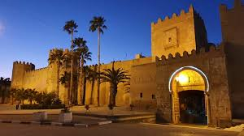
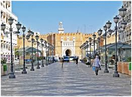
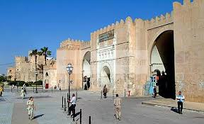
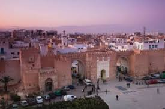
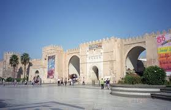
Situées juste au large de Sfax, ces îles offrent des plages paisibles, une atmosphère détendue et une expérience de vie insulaire authentique.
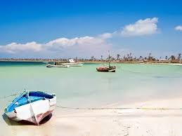
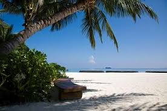
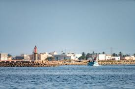
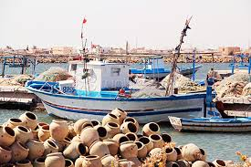
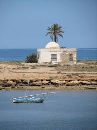
Ce musée d'art populaire, situé dans une ancienne maison (borj) du XVIIe siècle, présente l'histoire locale et l'artisanat traditionnel de Sfax.
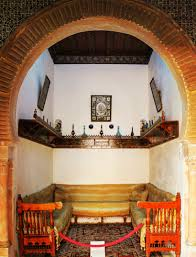
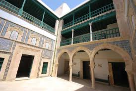
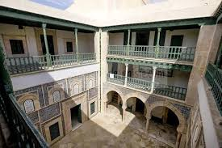
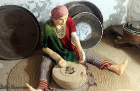
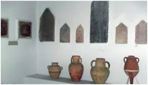
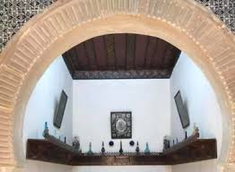